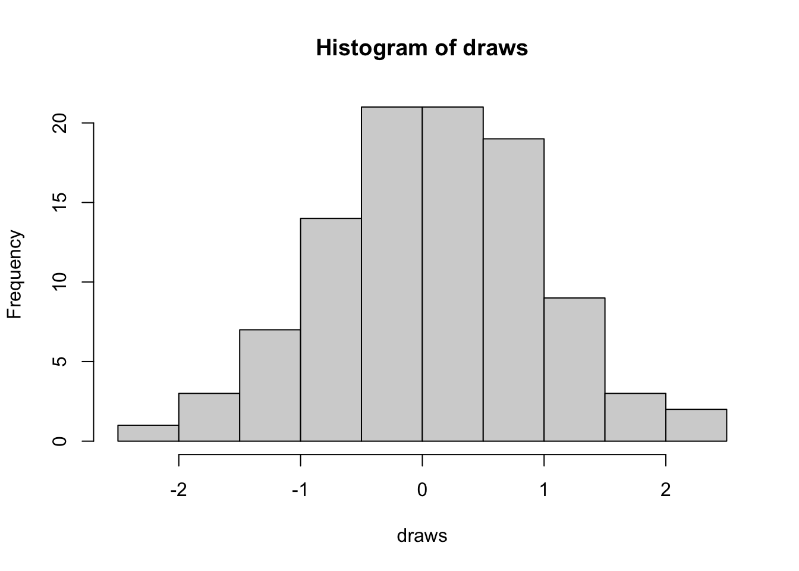
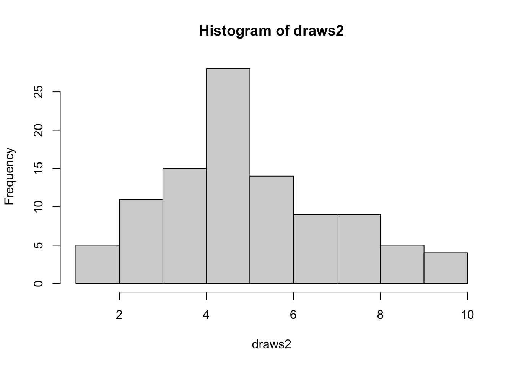

.Rmd documents
With RMarkdown it is easy to create documents or webpages that include text, code and plots. During the practical sessions we will work with RMarkdown, and not with R scripts. RMarkdown allows you to combine the code required to produce an analysis, its results, visualizations and descriptive text all in one document.
For a detailed guide on RMarkdown see R Markdown: The Definitive Guide. Most of the contents discussed here come from that source.
Compiling an R Markdown file
Essentially, an .Rmd file is just a plain text file used to store all your text and code needed to produce your final report. Although RStudio allows you to preview the output of your code, the output is not itself part of the .Rmd file. When you save and close your Rmd file and open it again later or send it to someone, the output will have disappeared (although also here, RStudio has some tricks to keep the output). The way to properly generate the output version of your Rmd file is by compiling it. This can be done in RStudio by pressing the Knit button in the toolbar, or by pressing Shift + Ctrl + K (Mac: Shift + Cmd + K). This will produce an HTML file with the same name as your Rmd and located in the same folder. You can open this file in any internet browser (you don’t need an internet connection since it’s a local file) and marvel at the nicely formatted output of your hard work. Another advantage of working with RStudio is that it will open this file automatically, either in a new window or in the “Viewer” pane (you can change this in the RStudio settings).
Important: saving your Rmd file does not update the corresponding HTML file automatically. In contrast, when you compile (“Knit”), your Rmd file will be saved first.
While editing you generally want to save often (you don’t want to lose stuff if something goes wrong) but you don’t need to compile every time you make a minor change, unless you want to see what the output will look like.
Formatting text
Bold and italic text
Text in an R Markdown document (i.e. everything that is not considered code) is written in Markdown syntax. This enables you to format text by surrounding it with special characters.
Italic text is generated by surrounding the text with a pair of either underscores (_text_) or asterisks (*text*). Bold text uses a pair of double underscores (__text__) or asterisks (**text**). Bold italic text can be achieved by using a combination of the two (__*text*__).
Lists
Unordered list items start with *, -, or +, and you can nest one list within another list by indenting the sub-list, for example:
- one item
- one item
- one item
* one more item
* one more item
* one more item
The output of the above syntax would be:
- one item
- one item
- one item
- one more item
- one more item
- one more item
A numbered list can be created by starting each item with a number:
1. the first item
2. the second item
3. the third item
Output:
- the first item
- the second item
- the third item
Note: make sure to leave an empty line between text and a list for correct formatting.
Main section title: first level
Subsection: second level
Sub-subsection: third level
Sub-sub-subsection: fourth level
In general it’s not recommended to go further than 4 sub-levels of sections.
Note that you can also include a table of contents at the top of your file by specifying toc: true in the YAML header.
Integrating text and R code
You can insert chunks of R code in your RMarkdown file by wrapping a code block inside ```{r} and ```.
In RStudio this is easily done by using the Insert button in the toolbar or the keyboard shorcut Ctrl + Alt + I (Cmd + Option + I on macOS).
For more information, see section 2.6 of The Definitive Guide
We will demonstrete the use of R-code with various examples in the sections below so that you can familiarise yourself with the syntax.
Basic R stuff
Simple calculations
R can be used as a simple calculator. Executing code can be done in various ways. To execute the entire chunk of code:
- In RStudio: click the green arrow in the upper right corner of the code chunk
- Place your cursor inside the chunk and press
Shift + Ctrl + Enter (Mac: Shift + Cmd + Enter)
Code can also be run line by line by selecting a line with your cursor and pressing Ctrl + Enter (Mac: Cmd + Enter).
Try executing the code below using both ways: line-by-line and the entire chunk.
## [1] 2
## [1] 37
The output should be displayed either right below the code chunk or in the R console. You can change this behaviour by selecting the settings gear in the RStudio toolbar and selecting Chunk Output Inline or Chunk Output in Console.
You can also run all chunks in you Rmd file by pressing the Run button in the toolbar (upper right) and then select Run All (or using the keyboard shortcut Shift + Ctrl + R on Windows or Shift + Cmd + R on Mac). Note that this menu also provides additional ways of running R chunks, the most useful ones being:
Run All Chunks Above: this executes all code chunks preceding your cursor location, starting at the top and tehn running down.Restart R and Run All Chunks: this will restart R and re-run your entire document. Note that this will remove all current objects and data from memory and re-starting R in a blank state. This means that any code that was run in the console and not saved in a code chunk will be lost. This might seem scary at first, but there are very good reasons to do this often. You can read more about this workflow here.
Functions
Functions are commands in R that perform certain tasks. They take inputs in the form of arguments and return their results as output. They are called using their name, followed by parentheses () in which the arguments are specified. There are many built-in functions in R. In addition, you can write your own functions or load other functins through the use of packages (more on that later).
As an example, we can use the function rnorm to sample 100 draws from a Normal distribution. We assign the result (a vector of 100 random numbers) to a new variable draws and display the first 6 values by caling the function head on this new variable.
# sample 100 numbers from a standard normal distribution
# (mean = 0, standard deviation = 1)
draws <- rnorm(100)
head(draws)
## [1] 0.3295078 -0.8204684 0.4874291 0.7383247 0.5757814 -0.3053884
Getting help in R: ?
What if instead of drawing from the standard normal distribution we want to sample from a normal with a mean of 5 and a standard deviation of 2? Knowing that rnorm is the function to generate normally distributed numbers, we can get more information on it by executing ?rnorm (usually you would do this in the Console, but for demonstration, we run it inside a code chunk here). This will open up the help page for the “The Normal Distribution” and all its related functions inside R, one of which is rnorm.
Read through the documentation, can you figure out how to change the mean and standard deviation?
The solution is to specify the mean and sd arguments.
draws2 <- rnorm(100, mean = 5, sd = 2)
head(draws2)
## [1] 3.690831 8.534575 6.433415 6.820348 5.768371 8.364352
Each built-in R function or functions loaded through a package has a help page. In addition, there is a wealth of information through the wonderful magic of Google. Another great place to look for answers or ask questions yourself is StackOverflow.
Tidyverse
The tidyverse is a set of packages designed to make data science in R more user-friendly. It shares a common philosophy and grammar of doing data science, which can change somewhat from how base R works (though it shouldn’t be an excuse to learn how to use base R!!!).
Instead of installing each tidyverse package individually, you can install all of them simultaneously by simply calling
install.packages("tidyverse")
Note that this code won’t be executed when compiling this report, because I specified eval=FALSE in the chunk options. Instead it should be called manually, for example in an R console.
For more information see
Visualizations
Base R
A picture often says more than words (or lines of code output) and R has a rich visualization toolbox that allows us to make powerful visualizations of our data.
For example, to visually verify that the random numbers we generated earlier (which are still stored in memory under the variables draws and draws2) are indeed normally distributed, we could make a histogram of them, using the hist function.
# draws comes from a standard normal (mean = 0, sd = 1)
hist(draws)

# draws 2 comes from a normal with mean = 5, sd = 2
hist(draws2)

Note that you can customize these plots in a lot of ways. Looking at the help page of hist or doing a quick internet search will take you a long way!
ggplot2
Although powerful, the base R visualization framework can be somewhat challenging to work with. A good alternative is the ggplot2 package, part of the larger tidyverse which includes more useful packages for data manipulation and analysis. ggplot2 uses a visualization framework based on the grammar of graphics philosophy, which we won’t get further into here but which can be quite an intuitive way to think about data visualizations.
ggplot2 works best with a data.frame as input. As an example, we’ll use the mtcars data, which is available by default in every R installation (for more info on this data set, see ?mtcars). With just a few lines, we can create already quite elegant visualizations:
library(ggplot2)
ggplot(mpg, aes(displ, hwy, colour = class)) +
geom_point()

You could perfectly recreate this plot with base R, but it’s going to take more lines of code and potential headaches. Still, both frameworks have their strengths and weaknesses and they are complementary in many ways, so it pays to learn both of them rather than stubbornly sticking to one.
There are tons of documentation and tutorials on ggplot2 to be found online. A good place to start is https://ggplot2.tidyverse.org/.
Importing data
See https://r4ds.had.co.nz/data-import.html.
Note that both the base read.csv and the tidyverse equivalent readr::read_csv() can both use URLs to read in data. That way you don’t have to download the data locally on your machine or worry about different versions.
## Example from HDA2020 course (https://statomics.github.io/HDA2020/)
uk_foods <- readr::read_csv(
file = "https://raw.githubusercontent.com/statOmics/HDA2020/data/ukFoods.csv",
col_names = TRUE,
col_types = cols()
)
## Warning: Missing column names filled in: 'X1' [1]
Summary of data
To get a quick summary of the data, you can use the summary function. This will return some summary statistics for the columns present in the data.
## iris is a default data set available in R
## To get more info, use `?iris`
summary(iris)
## Sepal.Length Sepal.Width Petal.Length Petal.Width
## Min. :4.300 Min. :2.000 Min. :1.000 Min. :0.100
## 1st Qu.:5.100 1st Qu.:2.800 1st Qu.:1.600 1st Qu.:0.300
## Median :5.800 Median :3.000 Median :4.350 Median :1.300
## Mean :5.843 Mean :3.057 Mean :3.758 Mean :1.199
## 3rd Qu.:6.400 3rd Qu.:3.300 3rd Qu.:5.100 3rd Qu.:1.800
## Max. :7.900 Max. :4.400 Max. :6.900 Max. :2.500
## Species
## setosa :50
## versicolor:50
## virginica :50
##
##
##
## [1] "data.frame"
Subsetting data
You can select subsets of a data.frame by using square brackets [] and specifying the number(s) of the row(s) or column(s) you want to select. Alternatively, you can use the dollar sign $ to select a column using its name.
To reduce the output printed out, we will first make a subset of the iris data containing just the first 10 rows.
# make subset of data to prevent long outputs
iris_sub <- iris[1:10, ]
iris_sub
# Select first column, single brackets returns data.frame
iris_sub[1]
# double brackets returns vector
iris_sub[[1]]
## [1] 5.1 4.9 4.7 4.6 5.0 5.4 4.6 5.0 4.4 4.9
iris_sub[["Sepal.Length"]]
## [1] 5.1 4.9 4.7 4.6 5.0 5.4 4.6 5.0 4.4 4.9
# using the dollar sign, also returns vector
iris_sub$Sepal.Length
## [1] 5.1 4.9 4.7 4.6 5.0 5.4 4.6 5.0 4.4 4.9
# Select all columns except the first one
iris_sub[-1]
# Selecting rows
iris_sub[1, ] # Select the first row
iris_sub[1:5,] # Select the first five rows
iris_sub[c(2, 4), ] # select the second and fourth rows
# columns and rows
iris_sub[1:5, "Sepal.Length"] # first 5 rows of "Sepal.Length" column
## [1] 5.1 4.9 4.7 4.6 5.0
iris_sub[3, 2] # third row, second column
## [1] 3.2
Including R object values or results in the text
You can add inline R code results by wrapping them inside `r `. This is useful for discussing the value of a result in your text. Instead of having to copy the value of a result (which is prone to error and not robust to changes), you can just call it inside the text. For example, we could calculate the mean sepal length of the iris flowers as follow:
## [1] 5.843333
We could copy the value inside our text, but a better way is by just running the code inline as mean(iris$Sepal.Length) surrounded by `r and `. So we could say that the iris flowers in our data have a mean length of 5.8433333.
Note: to actually see the value of the inline code, place your cursor inside the backticks ` `r and press Ctrl + Enter or Cmd + Enter. When you knit your Rmd file and build the HTML output, the inline R code will be replaced by its output value.
Including equations
Finally, you can include equations in your text using LaTeX syntax and surrounding it by a pair of double dollar signs $$. This is useful to specify models. For example, we can write the equation of a linear model as
$$
y_i = \beta_0 + \beta_1 x_i + \epsilon_i
$$
Which will be converted to the following output:
\[
y_i = \beta_0 + \beta_1 x_i + \epsilon_i
\]
Note that RStudio will give you a preview of what your equation will look like in the final document.
You can also include inline \(\LaTeX\) equations by using a pair of single $ signs. For example, the following sentence:
The sample mean of $y$ is given by $\bar{y}=\sum\limits_{i=1}^{n}\frac{y_i}{n}$
Will be converted to:
The sample mean of \(y\) is given by \(\bar{y}=\sum\limits_{i=1}^{n}\frac{y_i}{n}\)
Session Info
Finally, it’s always good practice to include the Session Info for your R session in your document. That way, other persons (including your future self) looking at your document can see what versions of R and loaded packages were used, which can be quite essential for reproducibility. There are 2 options, either using the base R command sessionInfo() or using the version from the devtools package: devtools::session_info(). Their outputs have slightly different formatting but the contents are essentially the same. Personally, I prefer the devtools version, but this is really a personal choice.
You can also include the date with Sys.time() so you have a time stamp of when the report was compiled. If you happen to be working inside a git repository, git2r::repository() is a useful function that displays information about the current git state and the last commit.
## [1] "2020-12-10 17:57:22 UTC"
## ─ Session info ───────────────────────────────────────────────────────────────
## setting value
## version R version 4.0.3 (2020-10-10)
## os macOS Catalina 10.15.7
## system x86_64, darwin17.0
## ui X11
## language (EN)
## collate en_US.UTF-8
## ctype en_US.UTF-8
## tz UTC
## date 2020-12-10
##
## ─ Packages ───────────────────────────────────────────────────────────────────
## package * version date lib source
## AnnotationDbi 1.52.0 2020-10-27 [1] Bioconductor
## AnnotationHub * 2.22.0 2020-10-27 [1] Bioconductor
## assertthat 0.2.1 2019-03-21 [1] CRAN (R 4.0.2)
## backports 1.2.1 2020-12-09 [1] CRAN (R 4.0.3)
## beachmat 2.6.2 2020-11-24 [1] Bioconductor
## beeswarm 0.2.3 2016-04-25 [1] CRAN (R 4.0.2)
## Biobase * 2.50.0 2020-10-27 [1] Bioconductor
## BiocFileCache * 1.14.0 2020-10-27 [1] Bioconductor
## BiocGenerics * 0.36.0 2020-10-27 [1] Bioconductor
## BiocManager 1.30.10 2019-11-16 [1] CRAN (R 4.0.2)
## BiocNeighbors 1.8.2 2020-12-07 [1] Bioconductor
## BiocParallel 1.24.1 2020-11-06 [1] Bioconductor
## BiocSingular 1.6.0 2020-10-27 [1] Bioconductor
## BiocVersion 3.12.0 2020-05-14 [1] Bioconductor
## bit 4.0.4 2020-08-04 [1] CRAN (R 4.0.2)
## bit64 4.0.5 2020-08-30 [1] CRAN (R 4.0.2)
## bitops 1.0-6 2013-08-17 [1] CRAN (R 4.0.2)
## blob 1.2.1 2020-01-20 [1] CRAN (R 4.0.2)
## broom 0.7.2 2020-10-20 [1] CRAN (R 4.0.2)
## callr 3.5.1 2020-10-13 [1] CRAN (R 4.0.2)
## CCA * 1.2 2012-10-29 [1] CRAN (R 4.0.2)
## cellranger 1.1.0 2016-07-27 [1] CRAN (R 4.0.2)
## cli 2.2.0 2020-11-20 [1] CRAN (R 4.0.2)
## cluster * 2.1.0 2019-06-19 [1] CRAN (R 4.0.2)
## colorspace 2.0-0 2020-11-11 [1] CRAN (R 4.0.2)
## crayon 1.3.4 2017-09-16 [1] CRAN (R 4.0.2)
## curl 4.3 2019-12-02 [1] CRAN (R 4.0.1)
## DBI 1.1.0 2019-12-15 [1] CRAN (R 4.0.2)
## dbplyr * 2.0.0 2020-11-03 [1] CRAN (R 4.0.2)
## DelayedArray 0.16.0 2020-10-27 [1] Bioconductor
## DelayedMatrixStats 1.12.1 2020-11-24 [1] Bioconductor
## desc 1.2.0 2018-05-01 [1] CRAN (R 4.0.2)
## devtools 2.3.2 2020-09-18 [1] CRAN (R 4.0.2)
## digest 0.6.27 2020-10-24 [1] CRAN (R 4.0.2)
## dotCall64 * 1.0-0 2018-07-30 [1] CRAN (R 4.0.2)
## dplyr * 1.0.2 2020-08-18 [1] CRAN (R 4.0.2)
## ellipsis 0.3.1 2020-05-15 [1] CRAN (R 4.0.2)
## evaluate 0.14 2019-05-28 [1] CRAN (R 4.0.1)
## ExperimentHub * 1.16.0 2020-10-27 [1] Bioconductor
## fansi 0.4.1 2020-01-08 [1] CRAN (R 4.0.2)
## farver 2.0.3 2020-01-16 [1] CRAN (R 4.0.2)
## fastmap 1.0.1 2019-10-08 [1] CRAN (R 4.0.2)
## fda * 5.1.7 2020-11-28 [1] CRAN (R 4.0.2)
## fds * 1.8 2018-10-31 [1] CRAN (R 4.0.2)
## fields * 11.6 2020-10-09 [1] CRAN (R 4.0.2)
## forcats * 0.5.0 2020-03-01 [1] CRAN (R 4.0.2)
## fs 1.5.0 2020-07-31 [1] CRAN (R 4.0.2)
## generics 0.1.0 2020-10-31 [1] CRAN (R 4.0.2)
## GenomeInfoDb * 1.26.2 2020-12-08 [1] Bioconductor
## GenomeInfoDbData 1.2.4 2020-12-10 [1] Bioconductor
## GenomicRanges * 1.42.0 2020-10-27 [1] Bioconductor
## ggbeeswarm 0.6.0 2017-08-07 [1] CRAN (R 4.0.2)
## ggplot2 * 3.3.2 2020-06-19 [1] CRAN (R 4.0.2)
## glue 1.4.2 2020-08-27 [1] CRAN (R 4.0.2)
## gridExtra 2.3 2017-09-09 [1] CRAN (R 4.0.2)
## gtable 0.3.0 2019-03-25 [1] CRAN (R 4.0.2)
## haven 2.3.1 2020-06-01 [1] CRAN (R 4.0.2)
## hdrcde 3.3 2018-12-21 [1] CRAN (R 4.0.2)
## highr 0.8 2019-03-20 [1] CRAN (R 4.0.2)
## hms 0.5.3 2020-01-08 [1] CRAN (R 4.0.2)
## htmltools 0.5.0 2020-06-16 [1] CRAN (R 4.0.2)
## httpuv 1.5.4 2020-06-06 [1] CRAN (R 4.0.2)
## httr 1.4.2 2020-07-20 [1] CRAN (R 4.0.2)
## interactiveDisplayBase 1.28.0 2020-10-27 [1] Bioconductor
## IRanges * 2.24.0 2020-10-27 [1] Bioconductor
## irlba 2.3.3 2019-02-05 [1] CRAN (R 4.0.2)
## jpeg 0.1-8.1 2019-10-24 [1] CRAN (R 4.0.2)
## jsonlite 1.7.2 2020-12-09 [1] CRAN (R 4.0.3)
## KernSmooth 2.23-17 2020-04-26 [2] CRAN (R 4.0.3)
## knitr 1.30 2020-09-22 [1] CRAN (R 4.0.2)
## ks 1.11.7 2020-02-11 [1] CRAN (R 4.0.2)
## labeling 0.4.2 2020-10-20 [1] CRAN (R 4.0.2)
## later 1.1.0.1 2020-06-05 [1] CRAN (R 4.0.2)
## lattice 0.20-41 2020-04-02 [2] CRAN (R 4.0.3)
## lifecycle 0.2.0 2020-03-06 [1] CRAN (R 4.0.2)
## lubridate 1.7.9.2 2020-11-13 [1] CRAN (R 4.0.2)
## magrittr 2.0.1 2020-11-17 [1] CRAN (R 4.0.2)
## maps 3.3.0 2018-04-03 [1] CRAN (R 4.0.2)
## MASS * 7.3-53 2020-09-09 [2] CRAN (R 4.0.3)
## Matrix * 1.2-18 2019-11-27 [2] CRAN (R 4.0.3)
## MatrixGenerics * 1.2.0 2020-10-27 [1] Bioconductor
## matrixStats * 0.57.0 2020-09-25 [1] CRAN (R 4.0.2)
## mclust 5.4.7 2020-11-20 [1] CRAN (R 4.0.2)
## memoise 1.1.0 2017-04-21 [1] CRAN (R 4.0.2)
## mime 0.9 2020-02-04 [1] CRAN (R 4.0.2)
## misc3d 0.9-0 2020-09-06 [1] CRAN (R 4.0.2)
## modelr 0.1.8 2020-05-19 [1] CRAN (R 4.0.2)
## munsell 0.5.0 2018-06-12 [1] CRAN (R 4.0.2)
## muscData * 1.4.0 2020-10-29 [1] Bioconductor
## mvtnorm 1.1-1 2020-06-09 [1] CRAN (R 4.0.2)
## pcaPP * 1.9-73 2018-01-14 [1] CRAN (R 4.0.2)
## pillar 1.4.7 2020-11-20 [1] CRAN (R 4.0.2)
## pkgbuild 1.1.0 2020-07-13 [1] CRAN (R 4.0.2)
## pkgconfig 2.0.3 2019-09-22 [1] CRAN (R 4.0.2)
## pkgload 1.1.0 2020-05-29 [1] CRAN (R 4.0.2)
## plot3D * 1.3 2019-12-18 [1] CRAN (R 4.0.2)
## prettyunits 1.1.1 2020-01-24 [1] CRAN (R 4.0.2)
## processx 3.4.5 2020-11-30 [1] CRAN (R 4.0.2)
## promises 1.1.1 2020-06-09 [1] CRAN (R 4.0.2)
## ps 1.5.0 2020-12-05 [1] CRAN (R 4.0.2)
## purrr * 0.3.4 2020-04-17 [1] CRAN (R 4.0.2)
## R6 2.5.0 2020-10-28 [1] CRAN (R 4.0.2)
## rainbow * 3.6 2019-01-29 [1] CRAN (R 4.0.2)
## rappdirs 0.3.1 2016-03-28 [1] CRAN (R 4.0.2)
## Rcpp 1.0.5 2020-07-06 [1] CRAN (R 4.0.2)
## RCurl * 1.98-1.2 2020-04-18 [1] CRAN (R 4.0.2)
## readr * 1.4.0 2020-10-05 [1] CRAN (R 4.0.2)
## readxl 1.3.1 2019-03-13 [1] CRAN (R 4.0.2)
## remotes 2.2.0 2020-07-21 [1] CRAN (R 4.0.2)
## reprex 0.3.0 2019-05-16 [1] CRAN (R 4.0.2)
## rlang 0.4.9 2020-11-26 [1] CRAN (R 4.0.2)
## rmarkdown 2.5 2020-10-21 [1] CRAN (R 4.0.3)
## rprojroot 2.0.2 2020-11-15 [1] CRAN (R 4.0.2)
## RSQLite 2.2.1 2020-09-30 [1] CRAN (R 4.0.2)
## rstudioapi 0.13 2020-11-12 [1] CRAN (R 4.0.2)
## rsvd 1.0.3 2020-02-17 [1] CRAN (R 4.0.2)
## rvest 0.3.6 2020-07-25 [1] CRAN (R 4.0.2)
## S4Vectors * 0.28.0 2020-10-27 [1] Bioconductor
## scales 1.1.1 2020-05-11 [1] CRAN (R 4.0.2)
## scater * 1.18.3 2020-11-08 [1] Bioconductor
## scuttle 1.0.3 2020-11-23 [1] Bioconductor
## sessioninfo 1.1.1 2018-11-05 [1] CRAN (R 4.0.2)
## shiny 1.5.0 2020-06-23 [1] CRAN (R 4.0.2)
## SingleCellExperiment * 1.12.0 2020-10-27 [1] Bioconductor
## spam * 2.5-1 2019-12-12 [1] CRAN (R 4.0.2)
## sparseMatrixStats 1.2.0 2020-10-27 [1] Bioconductor
## stringi 1.5.3 2020-09-09 [1] CRAN (R 4.0.2)
## stringr * 1.4.0 2019-02-10 [1] CRAN (R 4.0.2)
## SummarizedExperiment * 1.20.0 2020-10-27 [1] Bioconductor
## testthat 3.0.0 2020-10-31 [1] CRAN (R 4.0.2)
## tibble * 3.0.4 2020-10-12 [1] CRAN (R 4.0.2)
## tidyr * 1.1.2 2020-08-27 [1] CRAN (R 4.0.2)
## tidyselect 1.1.0 2020-05-11 [1] CRAN (R 4.0.2)
## tidyverse * 1.3.0 2019-11-21 [1] CRAN (R 4.0.2)
## tinytex 0.27 2020-11-01 [1] CRAN (R 4.0.2)
## usethis 2.0.0 2020-12-10 [1] CRAN (R 4.0.3)
## vctrs 0.3.5 2020-11-17 [1] CRAN (R 4.0.2)
## vipor 0.4.5 2017-03-22 [1] CRAN (R 4.0.2)
## viridis 0.5.1 2018-03-29 [1] CRAN (R 4.0.2)
## viridisLite 0.3.0 2018-02-01 [1] CRAN (R 4.0.1)
## withr 2.3.0 2020-09-22 [1] CRAN (R 4.0.2)
## xfun 0.19 2020-10-30 [1] CRAN (R 4.0.2)
## xml2 1.3.2 2020-04-23 [1] CRAN (R 4.0.2)
## xtable 1.8-4 2019-04-21 [1] CRAN (R 4.0.2)
## XVector 0.30.0 2020-10-28 [1] Bioconductor
## yaml 2.2.1 2020-02-01 [1] CRAN (R 4.0.2)
## zlibbioc 1.36.0 2020-10-28 [1] Bioconductor
##
## [1] /Users/runner/work/_temp/Library
## [2] /Library/Frameworks/R.framework/Versions/4.0/Resources/library
## only use this when working inside a git repository, don't worry if you don't know what this means
git2r::repository()
## Local: master /Users/runner/work/HDA2020/HDA2020
## Remote: master @ origin (https://github.com/statOmics/HDA2020)
## Head: [50698b2] 2020-12-10: added package plotly to install.R for GeomInterpretation
